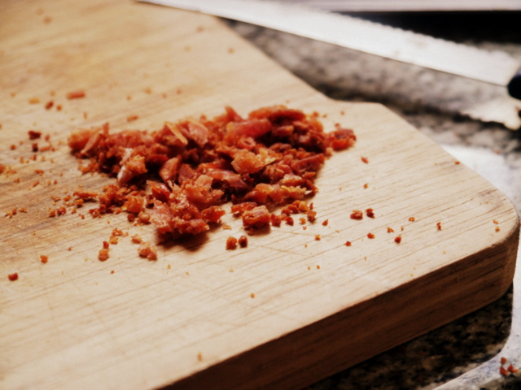

polvo de panceta

Ingredientes
- Panceta ahumada o salada (bacon)
Cómo hacer polvo de panceta
así de sencillo es
- Quitar a la panceta todos los trozos grandes de grasa. Cuanto más grasa le quitemos, mejor, se hará más rápido porque no es la grasa lo que utilizamos para el polvo. Cortarla lo más fina que puedas. De hecho, si pediste la panceta en fetas, es ideal para hacer el polvo de panceta.
- Colocar la panceta en un plato poniendo arriba y abajo papel absorbente de cocina. Llevar 1 minuto al microondas en potencia Máxima Zorreguieta.
- Revisar cuánto se secó, cambiar el papel si es necesario.
- A partir de ahí, ir dando golpes de microondas de 30 segundos y revisar cómo está cada vez hasta llegar al punto deseado. A mí me llevó en total unos 4 minutos. La idea es que la panceta pierda casi toda su humedad y grasa y quede crujiente. Tanto como para que cuando la partimos con un cuchillo salga el trocito volando de la tabla. O sea, que el trocito de panceta pierda toda flexibilidad.
- ¿Se puede hacer en horno común?: claro. Se pone sin papel, en temperatura suuuper baja y se la deja hasta que esté bien dura y crujiente. Cada tanto, abrir el horno y sacar con un papel la grasa que vaya soltando.
- Una vez que la panceta está bien crujiente. Moler. Puede ser con un mortero, con minipimmer o a cuchillo. A mí me gusta que quede un polvo esparejo, con alguna que otra piedra más grande. Lo hice a cuchillo. Aplicar a sopas, ensaladas o donde creas conveniente.